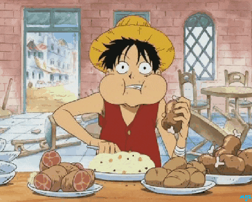

Welcome to the (un)official ranking of the best recipes from the One Piece cookbook!

We can't start with anything else besides Luffy's favourite, the meat
on the bone.
It's a delicious and relatively simple recipe that can be made at home
with not too many ingredients.
Next up is a very memorable pre-timeskip dish - the fried rice that
Sanji prepared for Gin.
It's a warm and cozy amalgamation of different ingredients and it can
be made using essentially anything found in your kitchen.
Last but not least, the elephant true bluefin sautѐ, a gourmet dish
made using the freshest tuna you can find.
It's an explosion of flavor and by far has the most technique
involved, as the tuna has to be cooked very carefully.